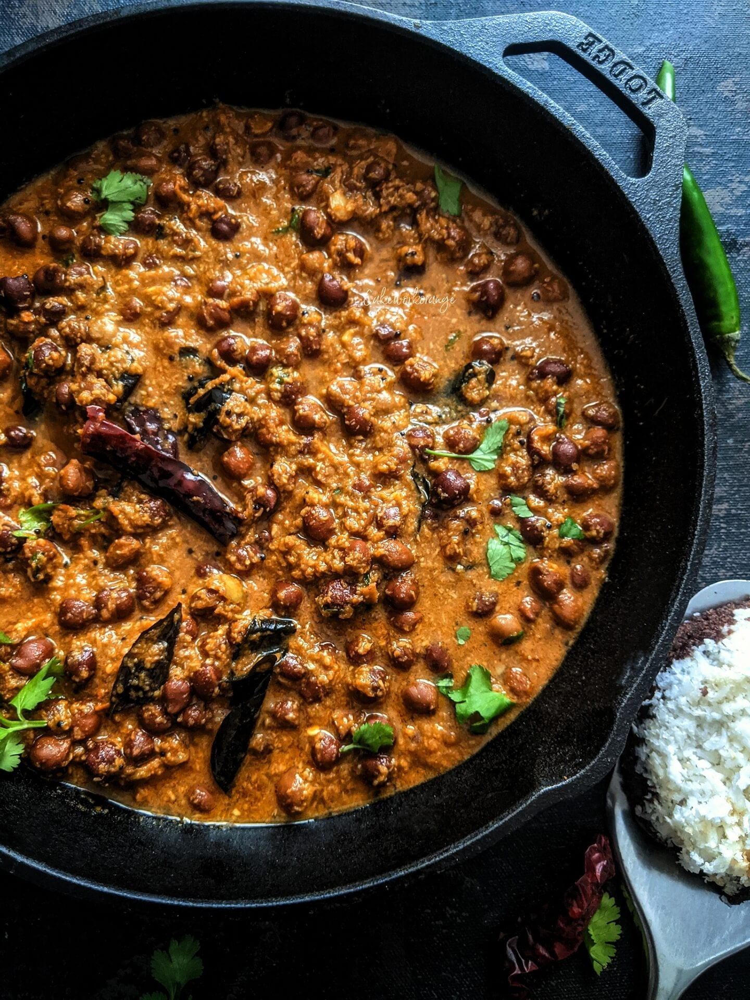

Kadala Curry

Description
Kadala Curry (a.k.a. Kadala Kari) is a delicious spicy curry made with black chickpeas, coconut and a bevy of warming spices. This popular dish is traditionally served with Puttu or Appam for breakfast in Kerala cuisine. Follow along with my step by step photos to learn how to make this comforting gluten-free and vegan curry like a pro!
Ingridients
- 2 cups brown kondaikadalai / kala chana
- 1 tbsp ginger garlic paste
- 1 cup onion, chopped
- 1 green chilli, slit
- 1 tomato
- 3/4 cup coconut, grated
- 1/4 tsp chilli powder
- 4 tsp coriander powder
- 1 tsp kerala garam masala powder
- salt
- 2 tbsp oil
- 1 tsp mustard seeds
- pinch of hing
- 2 red chillies
- few curry leaves
Steps
- Soak chana overnight or for 5-6 hours. Pressure cook for 3 whistles or until soft with a little salt and just enough water.
- Heat 1/2 tsp of oil and sauté coconut on medium flame until it turns golden brown. Grind it to a smooth paste.
- Chop onions and tomatoes to medium sized pieces.
- Heat oil in a pan, add mustard seeds, hing, when mustard splutters, add ginger garlic paste and sauté until the raw flavour goes.
- Then add onions, green chilli and sauté until onions turn light brown. Add a little salt to the onions to speed up the process.
- Add tomatoes and cook until tomatoes become mushy.
- Once the tomato is cooked, add turmeric powder, chilli powder, coriander powder, salt needed and sauté until the raw flavour of the masala powder goes. If it becomes too dry, add a tablespoon of water and cook.
- Then add the cooked Kadala along with the water. Add the ground coconut paste and cook for a few minutes.
- Take a ladle of cooked chana, grind it to a coarse paste and add it to the gravy along with Kerala Garam masala powder. Add more water and cook on medium flame until everything gets blended well.
- Heat 2 teaspoons of oil, sauté red chillies and curry leaves and add to the gravy. Garnish with coriander leaves and serve hot with chapatti or dosa.